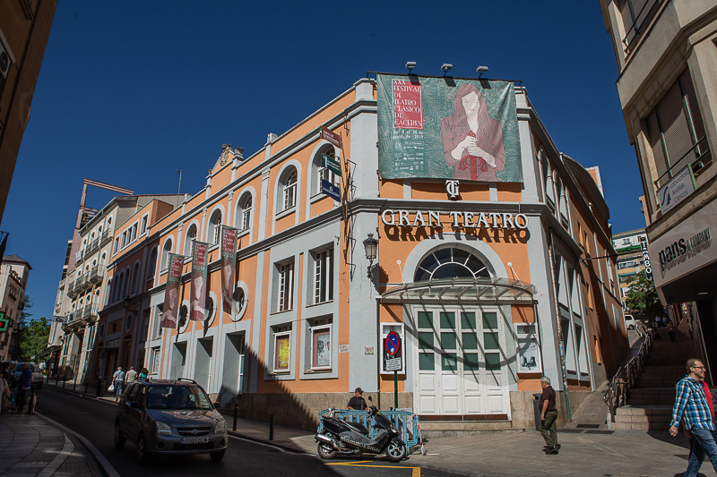
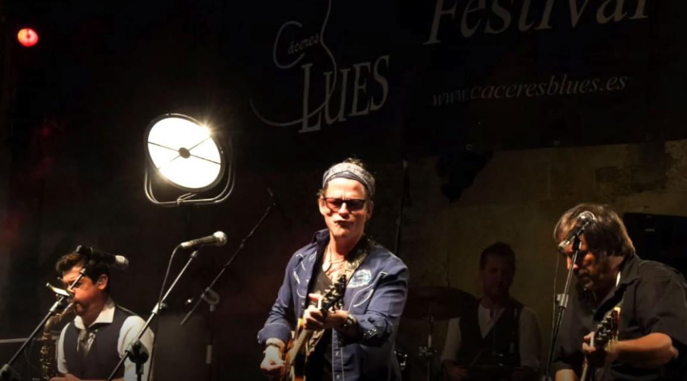
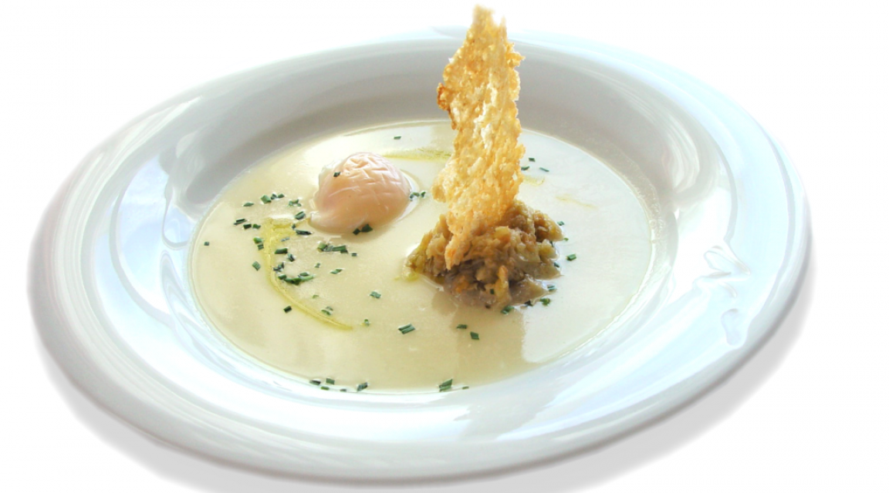
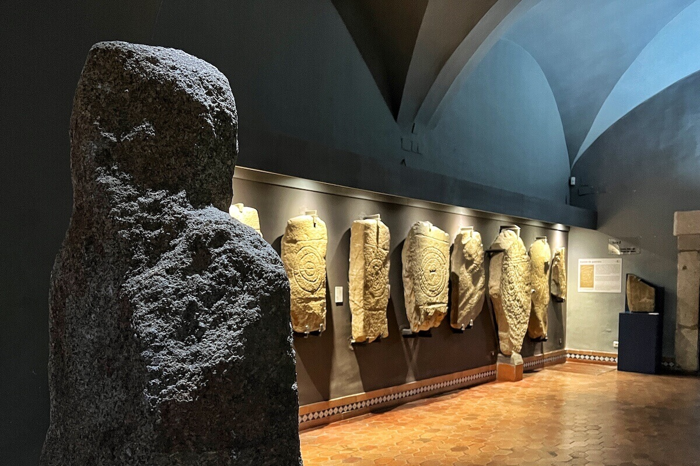

Ocio
Cáceres dispone de una gran oferta cultural como cines, teatros y festivales de música como el Irish Flead o el Festival de Blues.


Gastronomía
Cáceres cuenta con una amplia oferta gastronómica elaborada cuidadosamente con productos típicos de la tierra como la Torta del Casar o el pimentón de la Vera.


Museos
En Cáceres podemos encontrar una amplia concentración de museos, tanto arqueológicos, etnológicos o artísticos, como el Museo Provincial de la Casa de las Veletas, el Museo Helga de Alvear o la Casa Museo Árabe Yusuf Al-Burch
